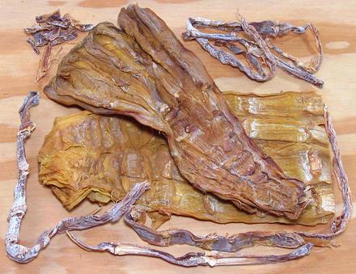
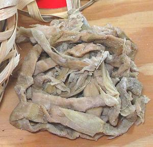

Bamboo Shoots, Dried

[Mang Kho (Viet); Menma (Japan)]
Dried bamboo shoots are of two types. Traditionally they were heavily
salted during drying. While the salted are still available, due to new
technology, most dried bamboo shoots in the markets here in Los Angeles
are of the unsalted form, whether wide, thin or sliced. They are always
treated with sulphur dioxide or another sulfite to preserve them and
maintain color, as is most dried fruit sold in North America.
Some of these products, especially from China, are an almost garish
yellow in color. Of the photo specimens, the large were from Vietnam
and the small from China. The largest wide piece was 11 inches long
and weighed 3 ounces.
More on Bamboo.

Dried Bamboo and Fresh Bamboo are different things, and not
interchangeable with each other. Dried Bamboo has a chewy meaty texture
and some sweetness, contrasting to the crisp texture and light flavor of
fresh bamboo. Dried is much valued in Vietnam for the perfumy effect it
has on broths and soups. In general, strips cut from medium size,
lighter colored bamboo shoots are recommended for shorter soaking and
faster cooking.
The salted form, shown in the photo to the left, is prepared
pretty much the same as the unsalted, with a couple changes of the
initial soaking liquid. It is milder and more grassy in flavor than
the unsalted form.
Buying:
Pretty much any market serving a Southeast
or East Asian community will have these, usually several brands, shapes
and sizes. The photo specimens were purchased from a large Asian market
in Los Angeles (San Gabriel). The large, in an 8 ounce package, for
2017 US $8.58 per pound, while the thin, in a 6 ounce package, were at
2017 US $10.10 / pound.
Storage:
Tightly sealed in a plastic bag, these shoots
will last at least a year stored away from sunlight and heat.
Prep:
Dried bamboo will expand to two or three times the
dried volume when fully soaked. Two or three ounces of dried is
sufficient for most recipes.
- Rinse the Dried Bamboo well, and wring it out as best you can.
- Place in a bowl and cover with water, 2 or so inches above the
Bamboo. Set aside for at least 6 hours. If the water turns cloudy,
change it with fresh.
- Drain Bamboo well and wring it out.
- Put Bamboo in a pot with plenty of water to cover well. Bring to a
boil, then keep at a simmer for 1 hour. Drain, rinse and wring out.
Return Bamboo to the pot, cover with fresh water, bring to a boil
and simmer another 1 hour. Drain rinse and wring out.
- Cut off and discard any parts that are very tough. Some chewiness
is OK as it will be cooked further in the recipe.
- Cut as appropriate for your recipe. Soaked Bamboo can be stored in
the fridge for a couple of days, or frozen for longer storage.
gr_bbdryz 170114 - www.clovegarden.com
©Andrew Grygus - agryg@clovegarden.com - Photos on this
page not otherwise credited are © cg1 -
Linking to and non-commercial use of this page permitted